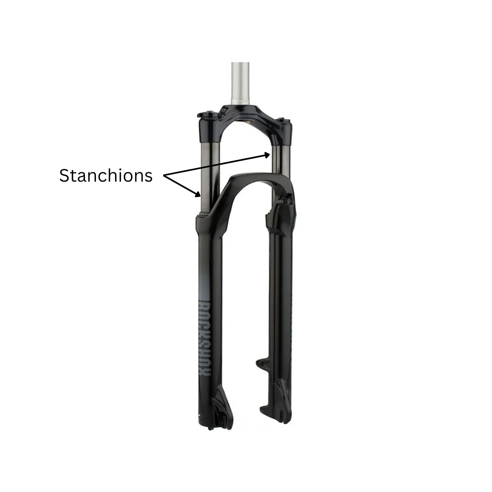
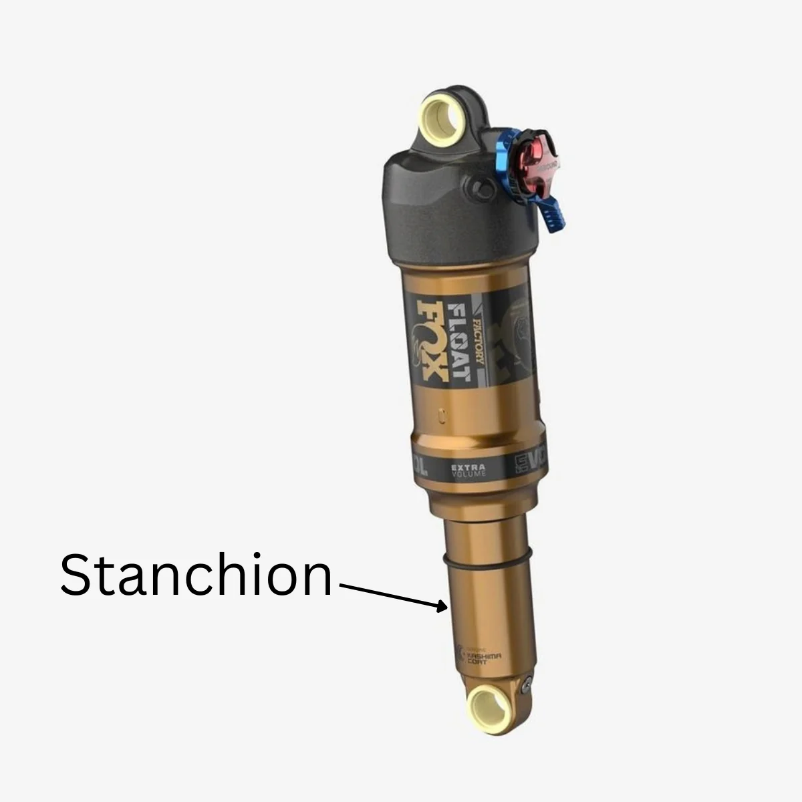
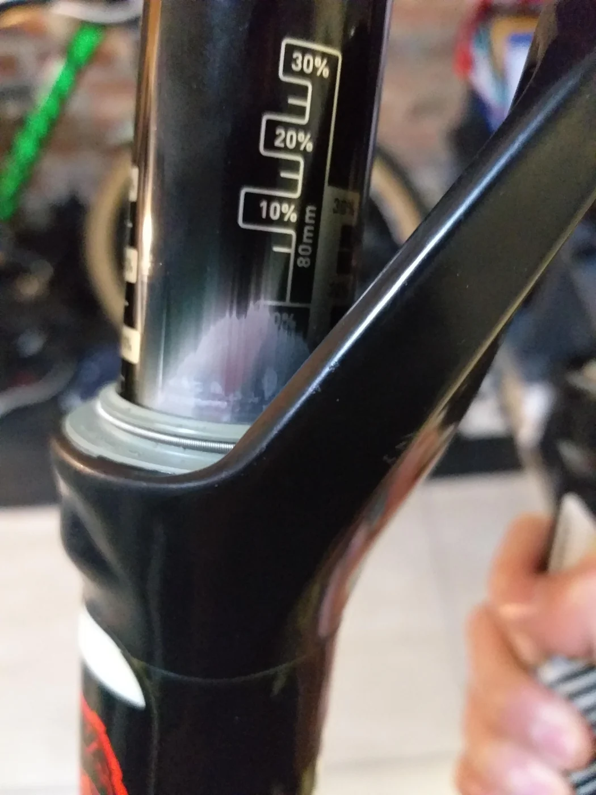
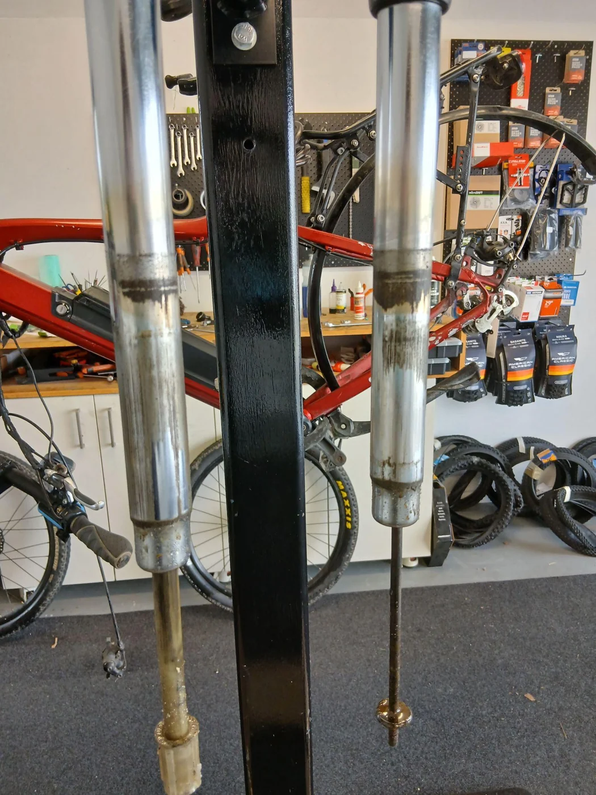

What
Most bikes have a front suspension fork and most mountain bikes have a rear shock too. To keep these working well and in good condition, they need regular servicing.
This is broken down into two main types of servicing:
- Front fork lower leg service / Shock air can service
- Damper service (Full service)
A fork lower leg / shock air can service is the basic service that keeps your suspension units in good condition and prevents premature and expensive wear. It also keeps your suspension moving freely and gives you the smoothest ride. In a fork lower leg service the fork is removed from the bike and the lower legs are removed from the fork. All parts are cleaned and the seals are replaced (to keep dirt and grit out). Everything is then put back together with fresh grease and oil.
Why?
If the stanchions (the smooth, slidey bit) of a fork are black or gold, this is normally a sign that it is a mid to high end fork, well worth looking after properly! These forks generally have between 6 and 15ml of oil inside each leg. That's not much, and it slowly disappears as you ride. That's why a fork lower leg service is so important — if that oil is running out or dirty, the fork stanchions will start wearing out. You may have seen bikes around where this has happened — the black or gold coating has been worn away and is now silver. This is irreversible wear and those stanchions are expensive to replace.



If your fork stanchions are chrome silver (and came that way from new), the fork probably uses grease keeping things lubricated and moving smoothly. While this isn’t as prone to disappearing as oil, it does get dirty, and when this happens it turns into a grinding paste. If your fork has dirty grease coming out of it or feels harder to compress than it used to, it's probably time to have it serviced.
A rear shock air can service is essentially the equivalent of a lower-leg service on a fork. The shock is removed from the bike, opened up, cleaned out and reassembled with new seals, grease and oil. In a shock, these seals also hold the air in place, so if your shock has lost pressure, it's probably due a service.


When?
Here in Christchurch our soil types make it extra important to keep up with your suspension servicing. If you ride at Bottle Lake or McLeans Island the sandy soil is an excellent grinding paste, while if you look at the loess soil found on the Port Hills and at the adventure park under a microscope, you’ll find it to have some pretty sharp edges. Loess also consists of over 50% quartz, a particularly hard rock which scores 7/10 on the Mohs hardness scale — meaning it is prone to scratching things and wearing them down!
Major suspension service manufacturers like Fox and RockShox recommend that fork lower legs and shock air cans should be serviced every 50 hours of riding. If you ride a lot, then that adds up pretty quick. Even a 1 hour ride every week, that means you're due a service once a year. If you are a frequent rider then you'll count up to 50 hours in a matter of months. As a general rule of thumb, a shock and air can service once a year is a great start.
Here at Bottle Lake Bikes we offer fork lower leg and shock air can services at a very competitive price. Check out our current workshop pricing, or book in for a service.
Damper service / full rebuild
Does your suspension feel like a pogo stick? Or when you turn the rebound or compression adjusters nothing changes? This is the most obvious sign that your fork or shock needs a full service, otherwise known as a damper service. Most manufacturers recommend this is done every 200 hours as standard practice, but in reality, most riders only get this service done when something has gone wrong — and that's okay — generally the only negative effect of skipping this service is the increased chance of your bike turning into a pogo stick mid ride.
Conclusions
Many riders aren’t even aware their suspension should be serviced. That's generally a result of bike shops not educating customers, so that's why I’ve written this article. It's also not included in normal servicing packages as these are one size fits all packages, and not all bikes have suspension. Here at Bottle Lake Bikes I offer a MTB Full Overhaul service which covers suspension as well as the extra complexities that mountain bikes have. Otherwise, suspension servicing can be added on to any other service you may book with us or we can service just your suspension. The key takeaway is that a fork lower leg or shock air can service is the equivalent to changing your car's engine oil — if you want it to run smoothly for years to come then it needs to be done.
Keep reading
Servicing Explained